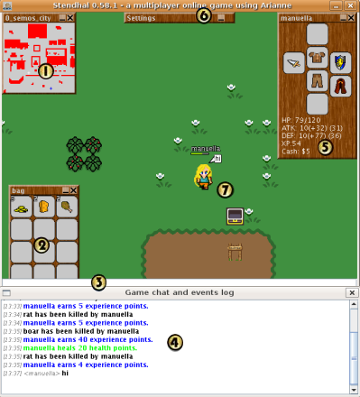

Game screen

- Minimap
The minimap shows the actual position of the player with a cross. Minimap only shows the actual zone non walkable areas.
- Player's bag
This is the bag where you can store up to
twelve items. If the bag closes and you want to open it again, click on
settings Windows(6) and click on player inventory.
- Chat line
You write the text to talk to other players and npcs here. You can also write commands here. There is a basic help writing /help
- Dialogs log
Here are all the messages received in the
current session stored (game messages and player messages). It is very
useful for conversational proposes.
- Player's character window
You can equip items as weapons, armor, legs, helmets and boots to obtain advantages.
- Settings window
Contains buttons to reopen the minimap, the player inventory and the player bag.
- Game area
All the gameplay happens here.